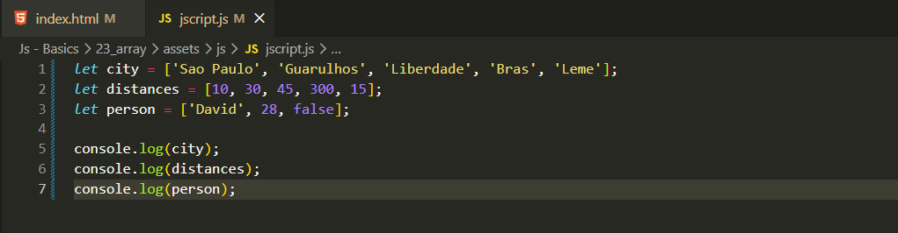

array
Intro
Anteriormente aprendemos sobre tipos de dados, strings, booleanos. Porem podem existir momentos onde iremos precisar de mais de um valor em uma variavel.
Anteriormente aprendemos sobre tipos de dados, strings, booleanos. Porem podem existir momentos onde iremos precisar de mais de um valor em uma variavel.
Podemos estar utilizando um array para poder colocar mais de um valor dentro de uma unica variavel, funcionando basicamente como uma lista nele podemos ter outros tipos dados fora strings, como: numbers, numbers com strings (ou vice versa) e booleano. Ex: let person = ['David', 28, false]; esse tipo de dado misturando strings, numbers e bool sao chamados de tuplas.
Nem sempre sao utilizadas, normamente sao mais usados os arrays homogeneos com apenas um tipo de dado
Iremos usar como exemplo: se formos visitar varias cidades. Se fossemos usar variaveis, poderia ficar um codigo muito grande e trabalhoso, dependendo do tanto de locais, para isso podemos fazer uso do array. Para isso fazermos da seguinte forma, usamos o nome do tipo de variavel (var, let, const) e o nome desse array e em seguida usamos colchetes [] e dentro podemos colocar os valores. Ficando da seguinte forma:
